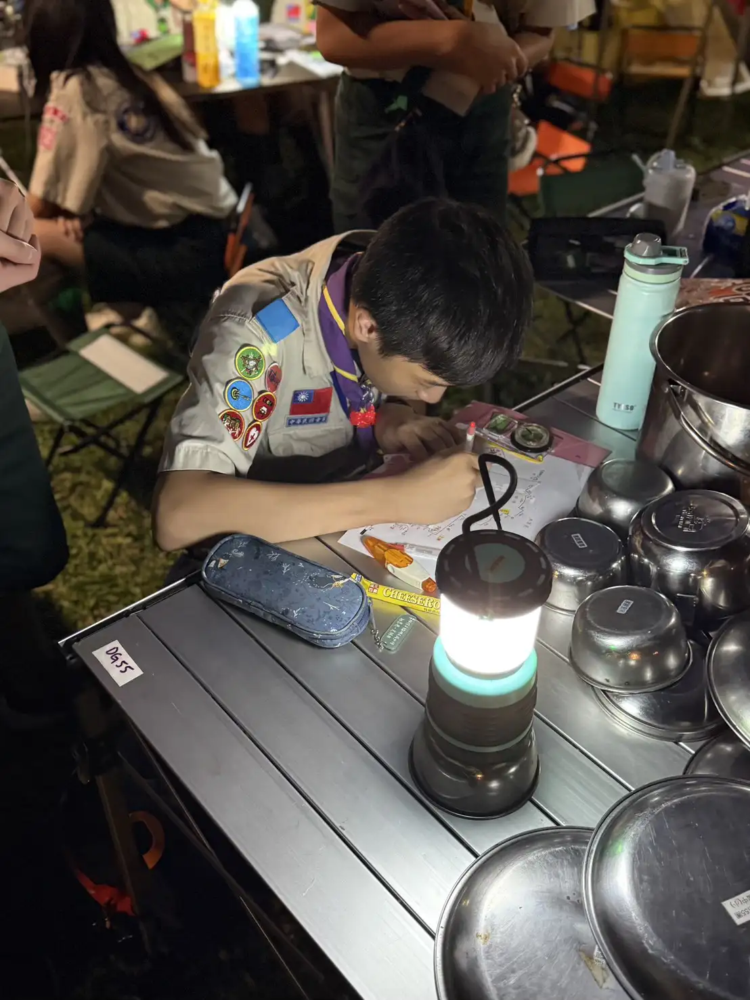
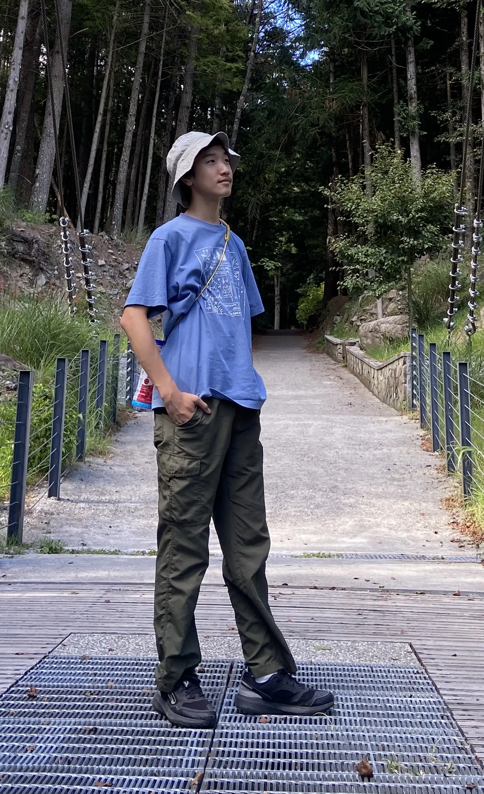

我是來自臺北市數位實驗高級中等學校的宇禾，一個 科學人。
我是個 科學人。從小，我就深深為科學著迷。從國小五年級至今，我總共參與了 4 次科展。這些經歷帶領著我在理科領域的探索，也培養出為人處事上的理性思維。
我是個 音樂人。三歲時因為一個衝動，開始踏進鋼琴的世界。十餘年來，我對於鋼琴的熱愛不曾停歇，我對鋼琴的學習也從未停止。
我是個 登山者。自幼我的父母就常常帶著我和我的弟弟一起去爬山，國小前，我們幾乎每年暑假都會去爬百岳，我十分熱愛山上的環境和爬山的過程～
我是個 資訊人。國小時，我開始好奇那些從網路上複製而來的程式。從 C++ 到 Python，我漸漸喜歡上這些程式語言與資訊技術。因著在資訊領域的學習，我掌握了善用科技工具解決問題的能力。
我是個 童軍。十年來，不曾停歇地參與童軍活動。在團集會中練習童軍技能、在露營活動中學習小隊精神、在全國大露營中和不同縣市、國家的童軍夥伴交流⋯⋯。童軍銘言第三條：「人生以服務為目的」，推進著我多次參與社會服務與環境保護相關活動，也讓我能夠以服務者的角度，參與身邊的各種議題。
現在，我還是個 議題關注者。國中時對於議題認識的萌芽，使我在高中接觸到學生自治、校訂必修議題相關課程時，開始研究各種議題，舉凡國家政治、國際關係、環境議題與教育議題等。我並不像個「正宗」的議題工作者，長期參與社會倡議、權益爭取，我開始接觸議題的時間很晚，也並沒有這麼豐富的經驗，但我喜歡也擅長透過理性析、換位思考的方式，理解現況，並思考解方或訴求。我相信，這多年來的學習路程，能夠使我對議題產生不一樣的看法，及與他人不同的關注或參與方式。

